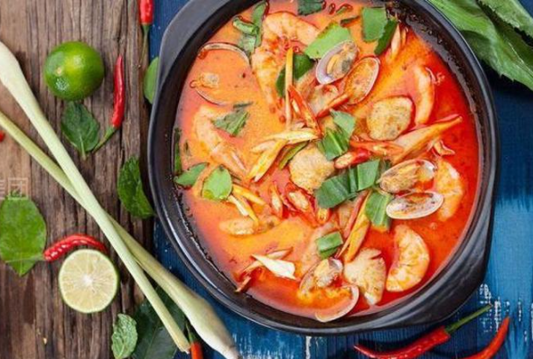
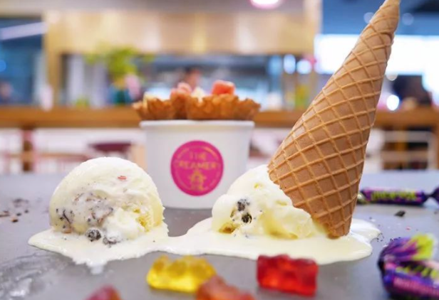

美食分类 中餐 西餐 自助餐 快餐 野餐 所有美食|GOODS 泰国马沙文咖喱 马沙文，又有咖喱之王之称，其实应该也是万食之王。将辛辣、椰果味、香甜、咸味交融在一同。在八种辛辣香料中添加花生仁制造而花生仁制造而成的马沙文咖喱... 那不勒斯比萨 那不勒斯比萨是用西红柿和马苏里拉芝士制作。配料可以是圣马扎诺西红柿和坎帕纳水牛奶马苏里拉芝士（水牛奶来自坎帕尼亚和拉齐奥的半野生州中的沼泽地... 墨西哥巧克力 墨西哥巧克力是一种用特种酱料调制的，味道很独特、浓厚的巧克力。我们可以在很多地方看到这种巧克力，尤其是那些售卖墨西哥食物的地方。它通常是块状的固体... 日本寿司 寿司是传统日本食品，即可以作为小吃也可以当正餐。在江户时代的延宝年间（1673年至1680年），京都的医生松本善甫把各种海鲜用醋泡上一夜，然后和米饭攥在一起吃。 北京烤鸭 烤鸭是具有世界声誉的北京著名菜式，起源于中国南北朝时期，《食珍录》中已记有炙鸭，在当时是宫廷食品。其用料为优质肉食鸭北京鸭，果木炭火烤制，。。。 德国汉堡 最早的汉堡包主要由两片小圆面包夹一块牛肉肉饼组成，现代汉堡中除夹传统的牛肉饼外传统的牛肉饼外，还在圆面包的第二层中涂以黄油、芥末、番茄酱、...  冬荫功汤 冬荫功汤是一道泰国名汤，典型的泰国菜，是世界十大名汤之一，在泰语中，“冬荫”指酸辣，“功”即是虾，合起来就是酸辣虾汤了。冬荫功汤是将辅料放入，而...  美国冰激凌 美国冰淇淋，其乳脂的含量约为12%、非脂肪乳固形物11%，糖15%，稳定剂0.2%，乳化剂0.2%，并含少量香草香精。固形物的总量为38.4%，其余部分是水。 <上一页 1 2 3 4 8 9 ... 11 下一页>